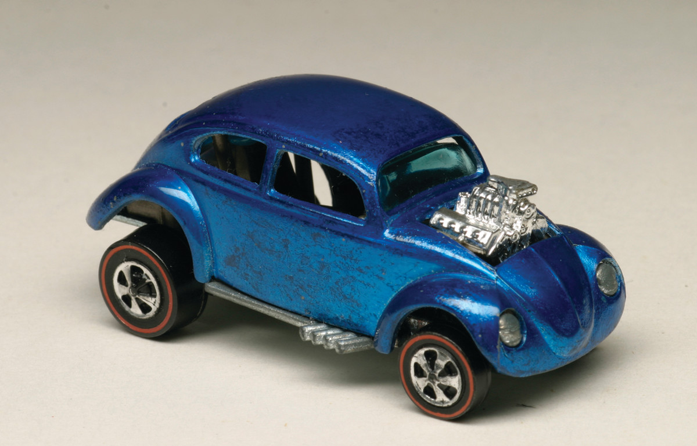

Hot Wheels top 5: Custom Volkswagen (without sunroof, 1968) |
|
|
|
TOP 5: Custom Volkswagen (without sunroof, 1968).
El primer Volkswagen personalizado fabricado en Hong Kong no tenía techo corredizo. Estos coches solo estaban disponibles en Europa, y la mayoría de ellos se vendían en Alemania y el Reino Unido. Además de venir sin techo corredizo, estos autos no tenían ventanas laterales de plástico y un interior diferente a los que siguieron. La mayoría de estos Volkswagen son azules con algunos aguamarina, y coches realmente raros en esmalte naranja, rojo, verde, cobre y verde. En 1974, Mattel reelaboró el casting estadounidense para los autos Flying Color. Aunque los autos también se produjeron en Hong Kong sin techo corredizo, el diseño en realidad es similar al Volkswagen personalizado original de EE. UU. Las partes del Volkswagen Flying Colors, sin embargo, no son intercambiables con los Volkswagen Custom de Hong Kong anteriores sin techo corredizo. Valor: $ 1,500 + suelto 
|
||